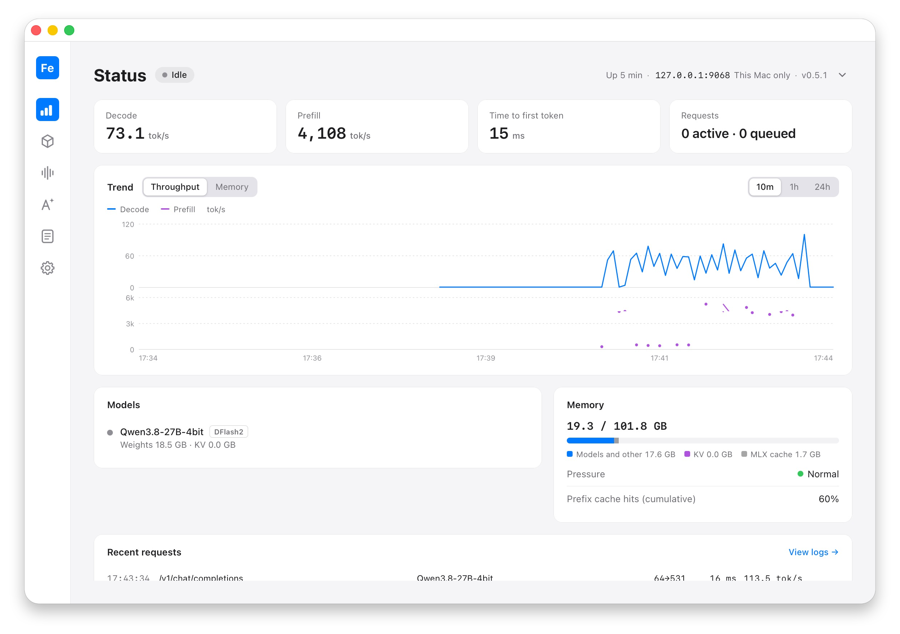
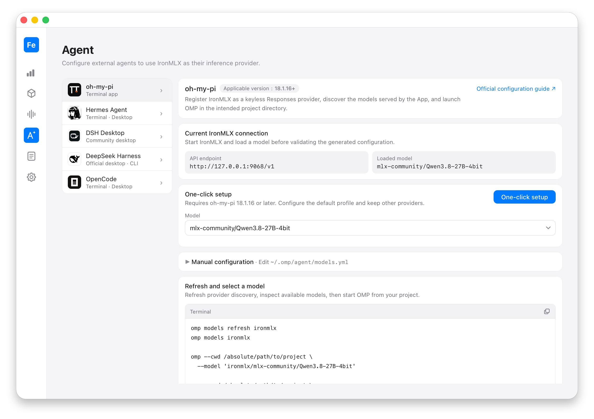

One-click Agent setup
Configure OpenCode, Hermes Agent, oh-my-pi and DeepSeek Harness from the App, or connect any OpenAI- or Anthropic-compatible client.
__RELEASE_BADGE_EN__
LOCAL INFERENCE FOR APPLE SILICON
A macOS App with a local inference server. Run open models on your Mac and serve your Agents through OpenAI- and Anthropic-compatible APIs.
__RC_DOWNLOAD_EN__


Configure OpenCode, Hermes Agent, oh-my-pi and DeepSeek Harness from the App, or connect any OpenAI- or Anthropic-compatible client.
Text and vision, speech synthesis and recognition, image generation, embeddings and decision models, served from one endpoint.
DFlash2 and MTP acceleration, continuous batching and prefix caching, tuned for Apple Silicon.
AGENT INTEGRATIONS
Pick an Agent, choose a loaded model, and let the App write the configuration. Each guide also covers manual setup.


SEE IT RUN
Open the Dashboard from the menu bar, load a model, send a request and watch the Status page.
OPEN INTERFACES
Chat Completions, Responses and Anthropic Messages, with streaming, tool calls and Structured Outputs.
# List the models on this Mac curl http://127.0.0.1:9068/v1/models # Send a chat request curl http://127.0.0.1:9068/v1/chat/completions \ -H 'Content-Type: application/json' \ -d '{"model": "your-model-id", "messages": [{"role": "user", "content": "Hello"}]}'
SUPPORTED TODAY
Explore the supported model architectures and the requirements for your Mac.